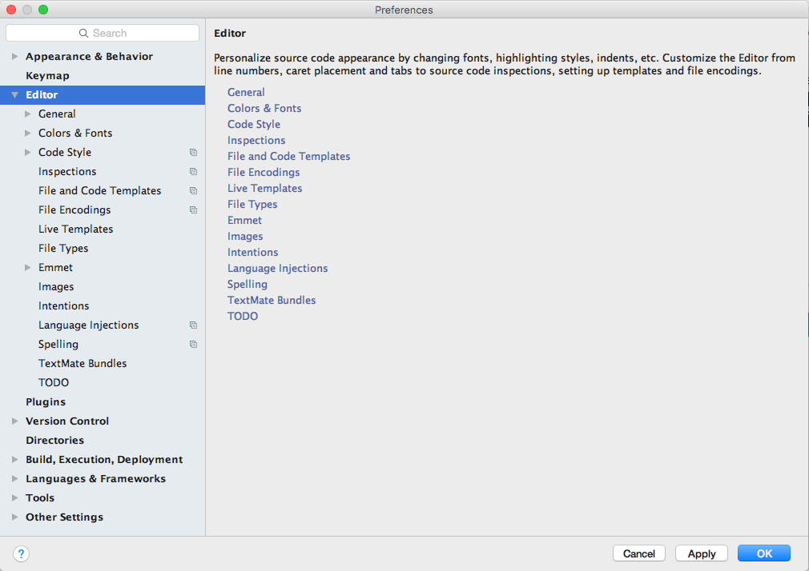
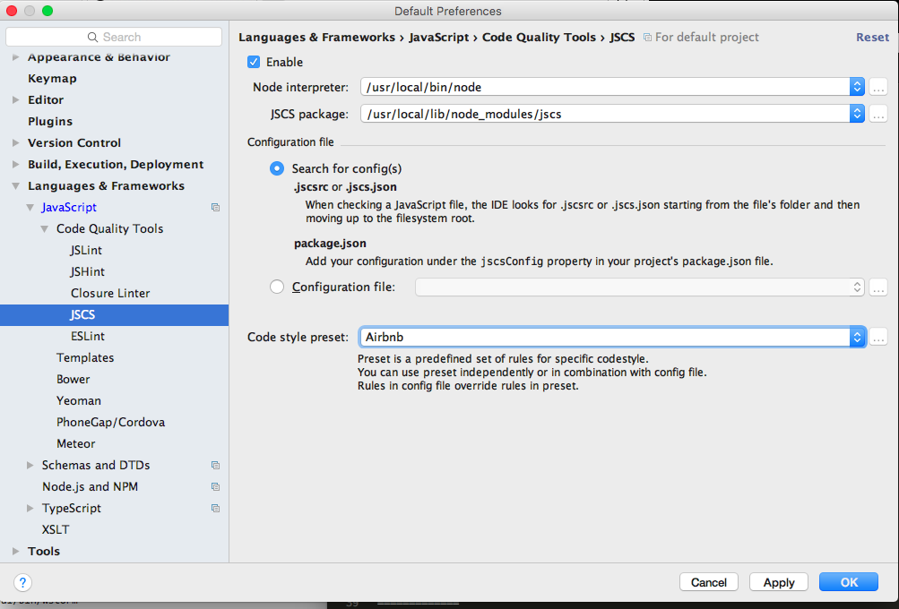
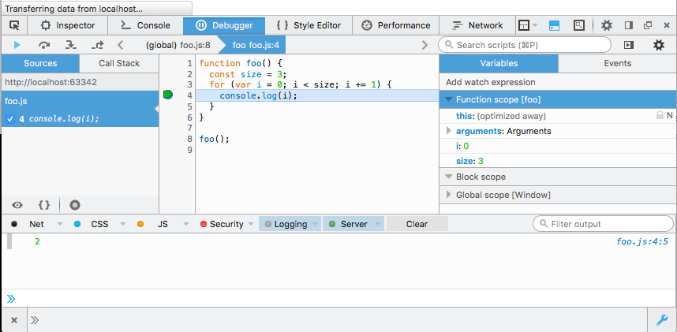

Objectives
Introducing the fundamentals of the javascript language, becoming familiar with some of the different sources of a selection of javascript resources. Explore Google Chrome's javascript-based tools. Understand basic types. Acquire an understanding of the roles that arrays and objects play in a javascript program. All using JetBrains' WebStorm IDE.
WebStorm IDE
Preparation
So that we can programmatically enforce a style guide as we progressively develop our application it is necessary to install an application named jscs. Here are brief instructions to install the app in both Windows 10 and Mac OSX.
Install nodejs
Instructions here:
Install jscs
This must be done from a command shell - and relies on a successful node installation.
npm install jscs -gWebStorm installation & configuration
Download and install WebStorm version appropriate to your operating system.
Follow the JetBrains instructions to obtain a free student license. For this you will require a valid academic student email address. Copy the license to a text file and save for future use.

Once you have installed Webstorm, launch the application and:
- Register your application using the student license,
- Click the gear icon and select preferences in the context menu.

Select the Editor in the Preferences pane. 
As shown in Figure 6, on the Preferences | Editor | Code Style | JavaScript pane, set the Tab size, Indent and Continuation indent to 2, 2 and 4 respectively.

Download and save to a permanent location this customized JSCS config file archive. Expand the archive. It contains a single file name .jscsrc.
Still in the JavaScript pane (referring to Figure 7 and Figure 8):
- Press the Manage button (Scheme) press OK to import JSCS config file.
- Browse to the location where you have saved the .jscsrc file, select it and press OK. The Import from JSCS config pane should then open.
- In the Code style preset dropdown pane select Airbnb. Press OK.
- You should then be returned to the Default Preferences pane. Ensure the Tab size, Indent and Continuation indent values are 2, 2 and 4 respectively, as shown in Figure 6, resetting them if necessary, 2.


Still in the Default Preferences | Editor pane, select HTML and set the Tab size, Indent and Continuation indent at 2, 2, 4 respectively as shown in Figure 9. The Scheme should be set to JSCS, provided by the customized .jscsrc file imported earlier.

As shown in Figure 10, select JSCS in the Preferences | Languages & Frameworks pane
- Tick the Enable checkbox
- Select Airbnb in the Code style preset dropdown.

In the Preferences | Languages & Frameworks select JavaScript and set the language version to ECMAScript 6. See Figure 11.
In Editor | JSON set Tabs and Indents pane as shown in Figure 12, that is, untick Use tab character, set Tab size, Indent and Continuation indent at 2, 2, 4 respectively.
Press the Apply and OK buttons at the foot of the preferences pane to return to the WebStorm spash screen.
Tip: As you progress through the labs you may encounter style guide errors in the code you enter in WebStorm editor. Study Figure 13 to understand how these may be corrected using the JSCS rules application.
To correct indentation invoke the menu command Code | Reformat Code. It is much more efficient to use the hot keys for this task. See Figure 14.

You are now ready to commence development using WebStorm.
Getting Started
Anatomy of a Web Page
Before diving into JavaScript, it helps to understand how it aligns with the other web technologies.
HTML is for Content
HTML is a markup language used to define and describe content. Whether it be a blog post, a search engine result or an e-commerce site, the core content of a web page is written in HTML. A semantic markup, HTML is used to describe content in universal terms (headers, paragraphs, images, etc.).
CSS is for Presentation
CSS is a supplemental language that applies style to HTML documents. CSS is all about making content look better by defining fonts, colors and other visual aesthetics. The power of CSS comes from the fact that styling is not intermingled with content. This means you can apply different styles to the same piece of content, which is critical when building responsive websites that look good across a range of devices.
JavaScript is for Interactivity
In the browser, JavaScript adds interactivity and behavior to HTML content. Without JavaScript, web pages would be static and boring. JavaScript helps bring a web page to life.
Look at this simple HTML page that includes CSS and JavaScript to see how it all fits together:
<!DOCTYPE html>
<head>
<title>Hello World</title>
<!-- CSS for presentation -->
<style type="text/css">
h1 {
font-size: 14px;
color: hotpink;
}
button {
color: red;
}
</style>
<!-- JavaScript for interactivity -->
<script>
function buttonClick() {
alert("Hello!");
}
</script>
</head>
<body>
<h1>Hello World</h1>
<button onClick="buttonClick();">Click Me!</button>
</body>
</html>In the example above, HTML is used to describe the content. The "Hello World" text is described as a heading with the <h1> tag and "Click Me!" is described as a button with the <button> tag. The <style> block contains CSS that changes the font-size and color of the header text. The <script> block contains JavaScript that adds interactivity to the button. When a user clicks on the button, an alert message will appear that says "Hello!".
In this example, for convenience, we have included the JavaScript in the HTML. This practice is not recommended and henceforth we shall place such code in an external file or files.
A Scripting Language for the Web
JavaScript was originally designed to add interactivity to web pages, not to be a general programming language, which makes it a scripting language. Scripting languages are regarded to be more productive than general languages because they are optimized for their specific domain (in this case, the web browser). However, recent advancements have brought JavaScript to the server-side (via Node.js) so it can now be used in place of languages like PHP, Ruby or ASP. This guide will focus exclusively on JavaScript running in the browser with jQuery.
The name "JavaScript" is a bit misleading. Despite the similarity in name, JavaScript has no relationship with Java), a general purpose language. JavaScript is based on an Open Web standard called ECMAScript. Standards-based languages are not controlled by any one entity or corporation - instead, developers work together to define the language, which is why JavaScript will run in every web browser regardless of the operating system or device.
What You Need to Get Started with JavaScript and jQuery
- Web Browser
- Text Editor
- Developer Tools (optional)
One of JavaScript's greatest strengths is its simplicity. It can be written and run on any operating system, and the only requirements are a web browser and a text editor. There are also numerous tools that can make JavaScript development more productive, but they are completely optional.
In this series of labs, however, we shall use a text editor within the WebStorm integrated development environment (IDE). This provides us with a number of advantages, mainly the ability to apply styleguide rules. We have chosen Airbnb Style Guide from an available list the includes Crockford, Google and others. Commonly referred to as "developer tools," many browsers ship with built-in features that provide better insight into JavaScript and jQuery while they run in the browser. Although they aren't required, you may find developer tools helpful when it comes to debugging errors in your code. Check out these browsers' developer tools:
- Apple Safari
- Google Chrome Developer Tools
- Microsoft Edge
- Microsoft Internet Explorer
- Mozilla Firefox Web Development Tools
- Opera Dragonfly
Exercises
JS WebStorm Project
Create a new project of type 'Empty Project' named js-intor by selecting File | New Project in WebStorm IDE. It should look like this:
Create a new file in the project called 'step1.html'. Copy the contents of the html file above into this file, working within the WebStorm editor:

Google Chrome
Select the file step-1.html in the left column, right click to open the context menu and select Open in Browser | Chrome.

This command opens the file in Chrome web browser.
Press the button above and note the appearance of a simple message box.
Double click on the file name step-1.html or select File | Open in top-level menu.
In addition, we will be making heavy use of the "Developer Tools". These are available via the "Customise and Control" button in the top right in the Google Chrome window:

When selected, the Chrome window will look like this:

In subsequent steps we will be very interested in exploring applications using the debugging feature and the ability to inspect variables and their scopes.
Running Code
External
The first and recommended option is to write code in an external file (with a ".js" extension), which can then be included on our web page using an HTML <script> tag and pointing the src attribute to the file's location. Having JavaScript in a separate file will reduce code duplication if you want to reuse it on other pages. It will also allow the browser to cache the file on the remote client's computer, decreasing page load time.
<!--Code is written in a .js file, then included via the script tag src attribute.-->
<script src="/path/to/example.js"></script>Inline
The second option is to inline the code directly on the web page. This is also achieved using HTML <script> tags, but instead of pointing the src attribute to a file, the code is placed between the tags. While there are use cases for this option, the majority of the time it is best to keep our code in an external file as described above.
<!--Embed code directly on a web page using script tags.-->
<script>
alert("Hello World!");
</script>Attributes
The last option is to use the event handler attributes of HTML elements. This method is strongly discouraged:
<!--Inline code directly on HTML elements being clicked.-->
<a href="javascript:alert("Hello World!");">Click Me!</a>
<button onClick="alert("Good Bye World");">Click Me Too!</a>See here and here for discussions on reasons why not.
Placement
Placement of the previous two options is important and can vary depending on the situation. If you are including JavaScript that doesn't access the elements on the page, you can safely place the script before the closing HTML <head> tag. However, if the code will interact with the elements on the page, you have to make sure those elements exist at the time the script is executed. This common pitfall can be seen in the example below. The script for finding the element with the ID "hello-world" will be executed before the element is defined in the document.
<!--Attempting to access an element too early will have unexpected results.-->
<!DOCTYPE html>
<head>
<script>
const title = document.getElementById("hello-world");
console.log(title);
</script>
</head>
<body>
<h1 id="hello-world">Hello World</h1>
</body>
</html>It is a common pattern to move scripts to the bottom of the page, prior to the closing HTML <body> tag. This will guarantee that elements are defined when the script is executed.
<!--Moving the script to the bottom of the page will make sure the element exists.-->
<!doctype html>
<html>
<head>
</head>
<body>
<h1 id="hello-world">Hello World</h1>
<script>
const title = document.getElementById("hello-world");
console.log( title );
</script>
</body>
</html>Exercise
Incorporate the last two html documents into two html file in your js-labs-1 project:
- step1a.html
- step2b.html
Open both files in the google Chrome browser. Show the developer tools, and examine the console:
step1a.html

step1b.html

Note the difference. Can you see the reason?
2.2 Influence of HTML5 script attribute defer
Replace the code in step-1.html with that below. Observe the changes we have introduced.
<!DOCTYPE html>
<head>
<meta charset="UTF-8">
<title>step-1</title>
<script src="step-1.js" defer></script>
</head>
<body>
<h1 id="hello-world">Hello World</h1>
</body>
</html>Create the referenced JavaScript file.
// step-1.js
let title = document.getElementById('hello-world');
console.log(title);Open step-1.html in Chrome and note the output in the console.
The refactored project is shown in Figure 3.
Delete the defer attribute and refresh the html file.
<script src="step-1.js"></script>Compare the two outputs.
Study this defer attribute documentation documentation.
- What is the effect of including the defer attribute?
- What restrictions if any apply to the use of the defer attribute?

JSCS
You should have downloaded `.jscsrc file in step one:
You should now place the '.jscsrc' file from the archive into your project. It will immediately try to validate the step-1.js source file. You should try to ensure that there are not violations in the file - such that the jscsrc is giving you a clean bill of health.
2.3 DOM Access
Introduce some more html elements into the page. By copying the code in the example, see if you can log these elements to the console
Syntax Basics
Comments
JavaScript has support for single and multi-line comments. Comments are ignored by the JavaScript engine and therefore have no side-effects on the outcome of the program. Use comments to document the code for other developers. Libraries like JSDoc are available to help generate project documentation pages based on commenting conventions.
Refer to Airbnb JavaScript Style Guide rules on comments for detailed information.
Single line comment
// This is an example of a single line comment.Multi line comment
/*
* this is an example
* of a
* multi line
* comment.
*/Whitespace
Whitespace is also ignored in JavaScript. There are many tools that will strip out all the whitespace in a program, reducing the overall file size and improving network latency. Given the availability of tools like these, whitespace should be leveraged to make the code as readible as possible.
Refer to Airbnb JavaScript Style Guide rules on whitespace for detailed information.
// Whitespace is insignificant.
const hello = "Hello";
const world = "World!";/**
* Semantic whitespace promotes readibility.
* Readible code is good!
*/
function foo() {
const size = 10;
for (let i = 0; i < size; i += 1) {
alert(i);
}
}
foo();
// This is much harder to read!
const foo=function() {for(let i=0;i<10;++){alert(i);}};foo();Reserved Words
There is a list of reserved words that may not be used when declaring user-defined variables and functions. Some of these reserved words are currently implemented, some are saved for future use, and others are reserved for historical reasons. A list of words and in-depth explanations for each can be found on the MDN JavaScript Reference
Identifiers
Identifiers are used to give variables and functions a unique name so they can subsequently be referred to by that name. The name of an identifier must follow a few rules:
- Cannot be a reserved word.
- Can only be composed of letters, numbers, dollar signs, and underscores.
- The first character cannot be a number.
its a best practice to name identifers in a way that will make sense to you and other developers later on.
The styleguide applicable to this series of labs requires that all identifiers must be camel case or upper case.
Note that jQuery identifiers should be prefixed with a $ as shown, for example, in the last variable below.
// Valid identifier names.
const myAwesomeVariable = 'a';
const myAwesomeVariable2 = 'b';
const MY_AWESOME_VARIABLE = 'C';
const $myAwesomeVariable = 'd';Exercises
3.1: Comments
For the javascript code you introduced in the previous step, experiment with commenting out different sections. Get used to commenting out single lines, or entire sections. Make sure you test that the commented out sections are actually not executed. i.e., open the files in Chrome and inspect the console. While the files are open in Chrome, make an change to the file in WebStorm, get used to reloading the already open pages in Chrome.
3.2: Running JavaScript Programs
Create a new file in the js-labs-1 project called 'step3.html'. Replace its contents with the following:
<!doctype html>
<html>
<head>
<meta charset="UTF-8">
<script src="js/foo.js"></script>
</head>
<body>
<h1 id="hello-world">Hello World</h1>
</body>
</html>Now create a new folder in the js-lab-1 project called 'js'. Create an empty file in this folder called 'foo.js'.
Edit the 'foo.js' file, and paste in the following:
function foo() {
const size = 10;
for (let i = 0; i < size; i += 1) {
alert(i);
}
}
foo();Your project should look like this:

Now open the step3.html file in Chrome. As you open the page you see the alert dialog appearing (10 times):

Once you have clicked through these - open the developer tools again - and select "Sources" and locate and display the foo.js file:

Back in WebStorm, change the code to output the loop variable value to the console three times. Reload the page and verify this works as expected.
3.2: Debugging JavaScript Programs using Google Chrome browser developer tools
In Chrome Sources view, click on margin alongside the alert line - this should place a marker as shown:

Reload the page again - reload the page. This time the behaviour will be a little different:

Now the javascript program is paused - because the marker we set down above is a 'breakpoint'. This means the programs is waiting your command to resume. Look closely at the panel on the bottom right:

Hover on the 5 buttons along the top for a few seconds each - and read the tooltip. Experiment with each one in turn and see if you can figure out its behaviour.
In particular, experiment with the 'step over..' and 'step into...' buttons. Monitor the "Scope Variables" panel while you are doing this:
and note the changes to the value of i.
3.3: Debugging JavaScript Programs using Firefox web developer tools
Set the JavaScript foo.js content to be the following:
function foo() {
const size = 3;
for (let i = 0; i < size; i += 1) {
console.log(i);
}
}
foo();For convenience we have reduced the loop size to 3 and directed output to the console rather than to a pop-up alert box.
Open step3.html in Firefox and access the developer tools using any of the following techniques:
- List of hotkeys for Windows, OSX and Linux operating systems is available here.
- Click on the wrench icon in the bottom right of the browser screen. This may be used as an open-shut toggle.
- Click on the menu item on the top right hand corner of the browser which exposes the wrench icon.
Study the Variables pane on the right of Figure 9. In particular observe that the variable i has block scope.

Now change foo.js by altering the type of the loop variable from let to var:
function foo() {
const size = 3;
for (var i = 0; i < size; i += 1) {
console.log(i);
}
}
foo();Refresh Firefox and observe how the contents of the Variables pane have changed. This is shown in Figure 9.
In particular, notice that the variable i now has function scope.

Types
Types in JavaScript fall into two categories: primitives or objects. Primitive types include:
- String
- Number
- Boolean
- Null
- Undefined
String
Strings are text wrapped in single or double quotation marks.
- It is best practice to consistently use one or the other.
- In this course we use single quotes exclusively.
There may be times when the string contains quotation marks that collide with the ones used to create the string. In this case, either escape the characters using a \ backslash or use different quotes around the string.
// We create strings with single quotes.
const a = 'I am a string!';
console.log(a);// Sometimes a string may contain quotation marks.
const statement1 = 'He said \'JavaScript is awesome!\'';
const statement2 = 'He said \"JavaScript is awesome!\"';
console.log(statement1);
console.log(statement2);
Exercise: Strings & Objects
Create a new File called 'step4.html' in your current project, and incorporate the following :
<!DOCTYPE html>
<html>
<head>
<meta charset="UTF-8">
<title>Types</title>
<script src="js/types.js"></script>
</head>
<body>
<h1 id="Hello Types">Hello World</h1>
</body>
</html>Note the src attribute in the script tag:
- create a corresponding javascript file called types.js in your project
Into types.js paste the following JavaScript code:
// We use single quotes in creating strings.
const a = 'I am a string!';
console.log(a);
const person1 = {};
person1.firstName = 'John';
person1.lastName = 'Doe';
console.log(person1.firstName + ' ' + person1.lastName);Now open the step4.html file in Chrome, place a breakpoint and step through the program.

Single step through the lines and observe.
The "Scope Variables" view displays the variables a and person1 as shown in Figure 3.
It is also possible to add variables to the Watch window as shown in Figure 4.

Enter the name of a variable - 'a' in this instance - and press return:

Experiment with the debug buttons - particularly the 'Step over' and 'Step into' buttons.
See if you can monitor the 'person1' object - you should be able to view its contents something like this:
You can restart the 'program' at any stage by reloading the page in Chrome.
Number
Number types are any positive or negative numeric value. There is no distinction between integer and floating point values.
// Numbers are any whole or floating point integer.
const num1 = 100;
const num2 = 100.10;
const num3 = 0.10;Boolean
Boolean types are either true or false.
// Boolean values.
const okay = true;
const fail = false;Null and Undefined
Null and undefined are special types in JavaScript. Null types are a value that represent the absence of a value, similar to many other programming languages. Undefined types represent a state in which no value has been assigned at all. This type is created in two ways: by using the undefined keyword or by not defining a value at all.
// Two ways to achieve an undefined value.
const foo = null;
const bar1 = undefined;
const bar2;Note, in the above your webstorm jscsrc style enforcer will flag the last statement as a violation of its guidelines.
Exercise: Numbers, Null and Undefined
Bring in the fragments above and single step through the code as we have been doing. See if you can 'watch' each of the new variables. At the the end of the script your 'watch expressions' view could look like this:

If you reload the page and break at the very first line, then the watch expressions will look like this:

Step through the program again and observe the variables change from undefined as values are assigned.
Objects & Arrays
Everything else is in JavaScript is considered an Object. While there are numerous built-in objects, here we focus on:
- Object
- Array
- Function
The simplest way to create an object is either through the Object constructor or the shorthand syntax known as object literal.
- We restrict ourselves to the use of literals. The Airbnb style guide prohibits use of the new operator.
These simple objects are unordered key/value pairs. The key is formally known as a property and the value can be any valid JavaScript type, even another object. To create or access a property on an object, we use what is known as "dot notation" or "bracket notation."
// Creating an object with the object literal syntax:
const person1 = {
firstName: 'Jane',
lastName: 'Doe',
};
console.log(person1.firstName + ' ' + person1.lastName);// As mentioned, objects can also have objects as a property.
const people = {};
people['person1'] = person1;
people['person2'] = person2;
console.log( people['person1'].firstName );
console.log( people['person2'].firstName );If a property is accessed that has not been defined, it will return a type of undefined.
// Properties that have not been created are undefined.
const person = { name: 'John Doe' };
console.log( person.email ); // => undefinedObjects are covered further in the later in more detail.
Exercise: objects.js
Create a new file called objects.js containing:
// Creating an object with the object literal syntax:
const person2 = {
firstName: 'Jane',
lastName: 'Doe',
};
console.log(person2.firstName + ' ' + person2.lastName);Set a breakpoint on the console.log line and reload the page such that it halts here. Observe the 'Watch' panel:

It is 'polluted' with the variable we were observing in the last step.
- In general, unwanted watch variable may be removed by clicking just to the right of the variable name on the minus sign as depicted in Figure 1.

Now add and observe 'person2':

Now append the following code to the above:
const person1 = {};
person1.firstName = 'John';
person1.lastName = 'Doe';
// As mentioned, objects can also have objects as a property.
const people = {};
people.person1 = person1;
people.person2 = person2;
console.log(people.person1.firstName);
console.log(people.person2.firstName);In particular, see if you can explore the people object in the Watch Expression panel:
Array
Arrays are a type of object that are ordered by the index of each item it contains. The index starts at zero and extends to however many items have been added, which is a property of the array known as the "length" of the array. Similar to a basic object, an array can be created with the array constructor or the shorthand syntax known as array literal.
// Creating an array with the constructor:
const foo = new Array; // we do not use this style
// Creating an array with the array literal syntax:
const bar = []; // this style complies with Airbnb style guideThere is an important distinction to be made between the two. Both an array construnctor and an array literal can contain items to be added to the array upon creating it. However, if just a single numeric item is passed in, the array constructor will assume its length to be that value.
// The array literal returns a bar.length value of 1:
const foo = [100];
// => 100
console.log( foo[0] );
// => 1
console.log( foo.length );
// The array constructor returns a bar.length value of 100:
const bar = new Array(100);
// => undefined
console.log(bar[0]);
// => 100
console.log(bar.length);An array can be manipulated through methods that are available on the instance of the array.
- Items in the array can be accessed using bracket notation enclosing an index.
- If the index does not exist or contains no value, the return type will be undefined.
A few common array methods are shown below:
// Using the push(), pop(), unshift() and shift() methods on an array
const foo = [];
foo.push('a');
foo.push('b');
console.log(foo[0]); // => a
console.log(foo[1]); // => b
console.log(foo.length); // => 2
foo.pop();
console.log(foo[0]); // => a
console.log(foo[1]); // => undefined
console.log(foo.length); // => 1
foo.unshift('z');
console.log(foo[0]); // => z
console.log(foo[1]); // => a
console.log(foo.length); // => 2
foo.shift();
console.log(foo[0]); // => a
console.log(foo[1]); // => undefined
console.log(foo.length); // => 1There are many more methods for manipulating arrays, some of which are covered further in the Arrays section. Details can be found on the Mozilla Developer Network.
Exercise: Arrays
Create a html-javascript file pair. The code follows:
- step6.html
- js/arrays.js
<!DOCTYPE html>
<html>
<head>
<meta charset="UTF-8">
<title>Arrays</title>
<script src="js/arrays.js"></script>
</head>
<body>
<h1 id="Hello Arrays">Hello Arrays</h1>
</body>
</html>// Using the push(), pop(), unshift() and shift() methods on an array
const foo = [];
foo.push('a');
foo.push('b');
console.log(foo[0]); // => a
console.log(foo[1]); // => b
console.log(foo.length); // => 2
foo.pop();
console.log(foo[0]); // => a
console.log(foo[1]); // => undefined
console.log(foo.length); // => 1
foo.unshift('z');
console.log(foo[0]); // => z
console.log(foo[1]); // => a
console.log(foo.length); // => 2
foo.shift();
console.log(foo[0]); // => a
console.log(foo[1]); // => undefined
console.log(foo.length); // => 1Comment out all of the code using the multi-line comment
/*
...
*/Incorporate some of the array examples above and single step though them. Carefully explore the arrays in the "Watch Expressions" panel. Note the appearance of an array in that panel:

Contrast it with how an object looked earlier:
Can you see how similar they are?
Operators
Basic operators allow you to manipulate values.
// Concatenation
const foo = 'hello';
const bar = 'world';
console.log(foo + ' ' + bar); // => hello world// Multiplication and division
2 * 3;
2 / 3;/**
* Incrementing and decrementing
* The pre-increment operator increments the operand before any further processing.
* pre-increment:
*/
let i = 1;
console.log(++i); // 2
console.log(i); // 2
/**
* The post-increment operator increments the operand after processing it.
* post-increment:
*/
let i = 1;
console.log(i++); // 1 - because i was 1
console.log(i); // 2 - incremented after using itOperations on Numbers & Strings
In JavaScript, numbers and strings will occasionally behave in unexpected ways.
// Addition vs. Concatenation
const foo = 1;
const bar = '2';
console.log(foo + bar); // 12// Coercing a string to act as a number:
const foo = 1;
const bar = '2';
console.log(foo + Number(bar)); // 3
console.log(foo + (+bar)); // also 3. +bar => numeric representation of object barThe Number constructor, when called as a function (as in the above example), will have the effect of casting its argument into a number. The unary plus operator also does the same thing:
// Forcing a string to act as a number (using the unary plus operator):
console.log(foo + +bar); // 3Exercise 6.1: Operators
Duplicate step5.html to a new file step6.html - and also create a new js file 'operators.js'. Link the script to the html file in the usual way. Incorporate the following code into the js file:
const foo = 1;
const bar = '2';
console.log(foo + bar);const foo = 1;
const bar = '2';
console.log(foo + Number(bar));
console.log(foo + +bar);Run these programs and observe the results.
Logical Operators
Logical operators allow evaluation of a series of operands using AND ( && ) and OR ( || ) operations.
// Logical AND and OR operators
const foo = 1;
const bar = 0;
const baz = 2;
// returns 1, which is true
console.log(foo || bar);
// returns 1, which is true
console.log(bar || foo);
// returns 0, which is false
console.log(foo && bar);
// returns 2, which is true
console.log(foo && baz);
// returns 1, which is true
console.log(baz && foo);In the above example, the || operator returns the value of the first truthy operand, or in cases where neither operand is truthy, it returns the last operand. The && operator returns the value of the first false operand, or the value of the last operand if both operands are truthy.
You'll sometimes see developers use these logical operators for flow control instead of using if statements. For example:
// do something with foo if foo is truthy
foo && doSomething(foo);
/**
* set bar to baz if baz is truthy;
* otherwise, set it to the return
* value of createBar()
*/
const bar = baz || createBar();This style is quite elegant and pleasantly terse; that said, it can be really hard to read or use, especially for beginners.
- See the section on truthy and falsy things in the Conditional Code article for more about evaluating truthiness.
- Further information is available on the Mozilla Developer Network (MDN) site at Truthy and Control Structures
Comparison Operators
Comparison operators allow you to test whether values are equivalent or whether values are identical.
// Comparison operators
const foo = 1;
const bar = 0;
const baz = '1';
const bim = 2;
foo == bar; // false
foo != bar; // true
foo == baz; // true; Because == operator performs type coercion on different types
foo === baz; // false
foo !== baz; // true
foo === parseInt(baz); // true
foo > bim; // false
bim > baz; // true
foo <= baz; // trueFor more information about comparison operators, visit the MDN(Comparison Operators).
Exercise: Operators
Create a step7.html + operators.js file in the usual manner.
Incorporate the 'logical operators' code fragment from above - and debug through them to verify the true/false values are as indicated.
Selected debug features
The following summarizes some of the frequently used features in the developer tools pane:
Sources pane
- This pane is shown in Figure 1 below.
- It allows one to view both the html and script files (JavaScript).
Break points
- Break points may be positioned as shown. This feature is quite similar to that already encountered in debugging Java in Eclipse.
- To set a breakpoint simply click on the line number.
- To remove a breakpoint click on it.
Pause | Run
- Execution pauses at a breakpoint. Pressing this button causes the execution to resume and continue to the next breakpoint or to the end of ths script if no further breakpoints present.
Step over
- Allows one to execute the code manually line by line.
Watch variable
- One may add a variable here and observe its value.

- Console pane
- The output from control.log is viewable in the Console pane
- The output generated by example.js is shown in Figure 2 here.
Exercises
Archive of the project so far:
Download and make sure you can open this project in WebStorm successfully. Verify that the Jscsrc guidelines are all showing green. Deliberately introduce some style violations, and get used to the error reports from the style plugin.